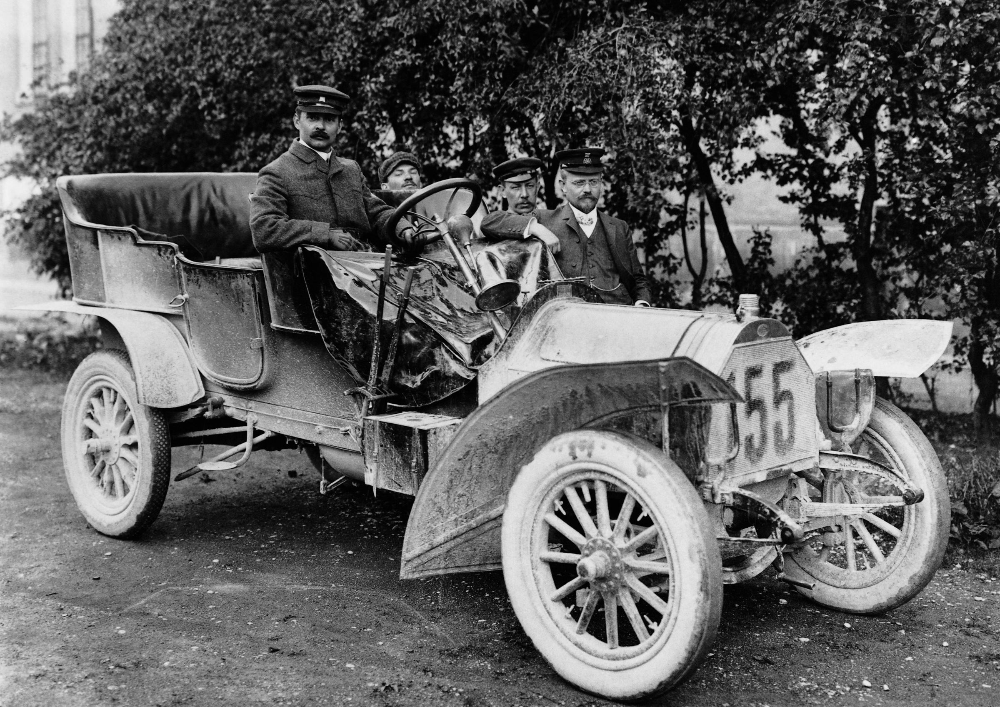
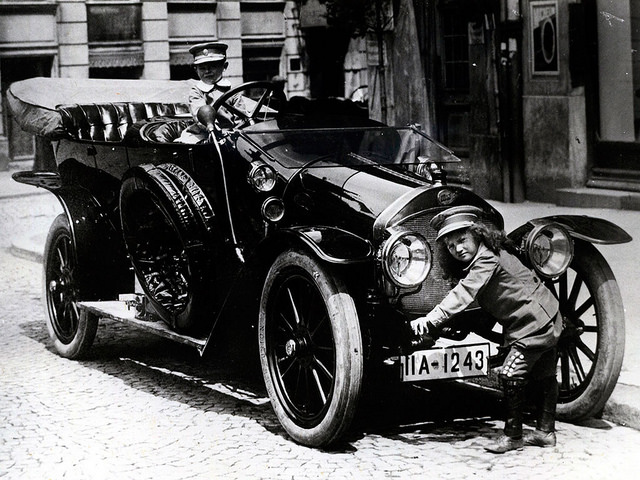
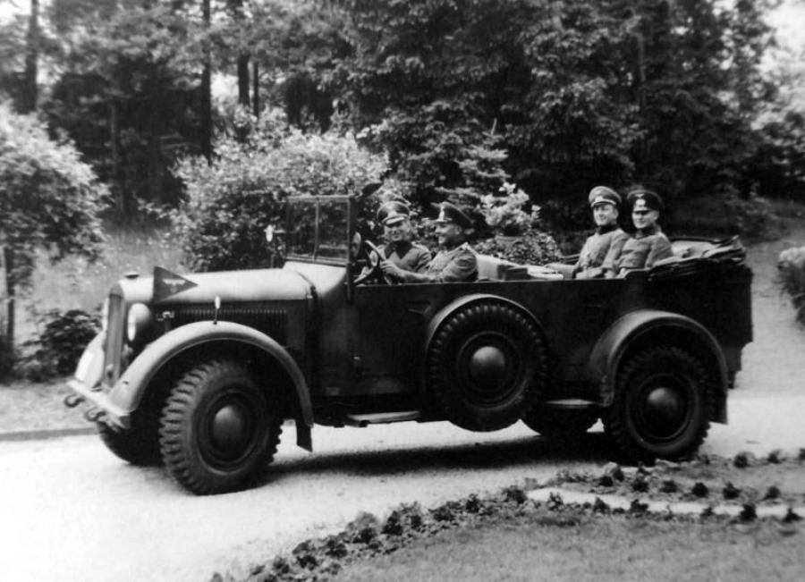
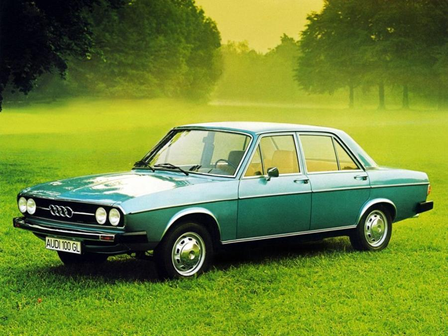
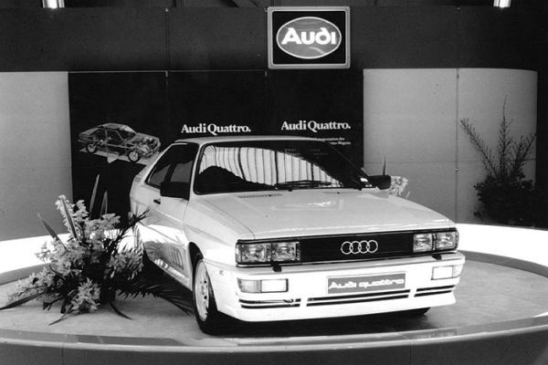
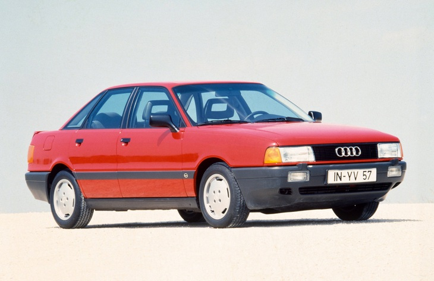
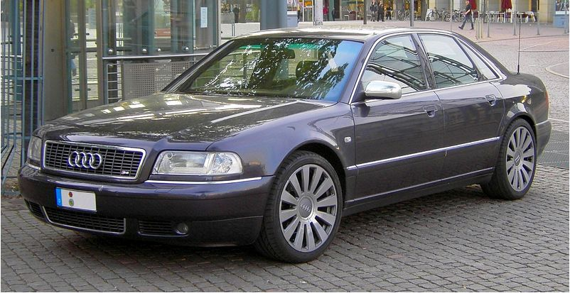
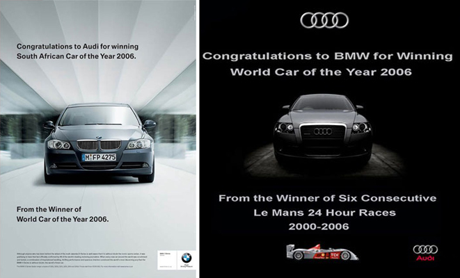
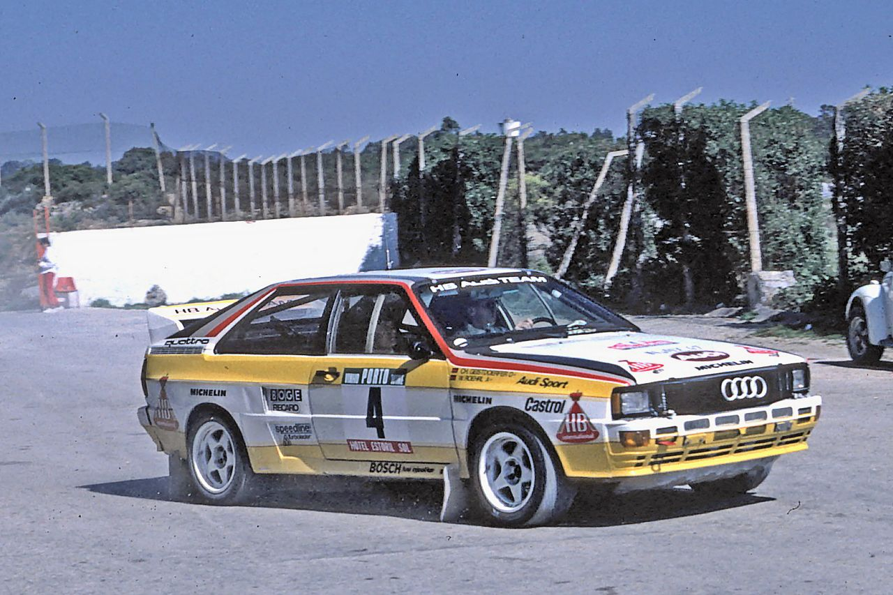
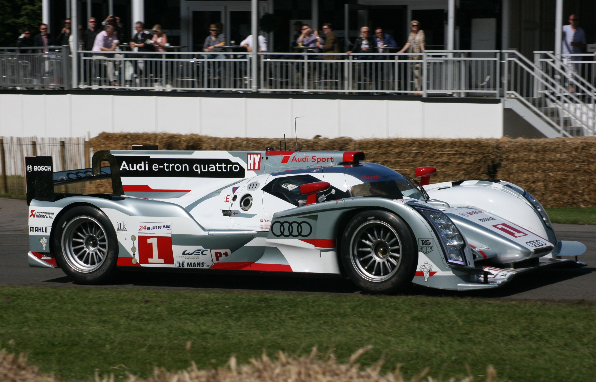

The History of Audi
Когда в конце XIX века немецкий инженер-конструктор Август Хорьх организовал предприятие под названием «Horch&Co.», он и подумать не мог, что через каких-то сто лет его детище станет одним из лидеров мирового автопрома. А иначе и не могло быть, ведь к созданию первой машины немца подтолкнула огромная любовь к автомобилям и жажда изобретений.

How it all began
1899 год, в Германии под Кельном открывается небольшое производство со штатом 11 человек. Именно с него и началась история Ауди. Первая машина «Horch&Co.» увидела свет уже через год, в 1900. Это был автомобиль с двухцилиндровым мотором мощностью всего 4-5 Л.С., развивающий скорость до 60 км/ч. По тем временам первая модель Horch была не так уж и плоха: заднеприводное авто на ремне с передним расположением двигателя, но главное, что было у детища Хорьха, – соединенная с главной передачей коробка передач.
Дела пошли в гору, штат компании рос, и уже через два года на предприятии трудилось 90 человек. Нашлись и инвесторы, готовые вложить средства в стремительно развивающийся автопром. Это позволило расширить производство.
В 1902 году выходит более мощный двухцилиндровик, но уже с карданным валом. Следом за ним Хорьх разрабатывает и третью модель с четырехцилиндровым двигателем мощностью целых 16-20 Л.С. Благодаря дополнительным денежным вливаниям и расширению уставного капитала в 1903 году завод переезжает в Цивиккау и выпускает уже четвертую модель с двигателем 2600 см3 и трехступенчатой коробкой, которая по тем временам полностью удовлетворяла запросы покупателей. Разработчики каждый год радовали своих поклонников новинками, совершенствовали ранние разработки. Но чтобы заявлять о себе, нужна была реклама. И гонки стали лучшим способом ее реализации.
Для «Horch&Co.» это был провал, ведь автомобиль, участвовавший в заездах, потерпел неудачу. Акционеры предложили Хорьху уйти с поста главы компании, которую он создал и управлял производством 10 лет.
History of the Audi brand
Человек с сердцем инженера не смог оставаться в стороне и уже в 1909 году открыл новый завод, заняв на это 200 тыс. марок. С названием мудрить не стал и снова решил использовать собственную фамилию. Однако бывшие компаньоны подали на немецкого инженера в суд за плагиат. Пришлось искать другой вариант, и на помощь пришел сын одного из коллег, сыгравший в истории названия Ауди главную роль. Мальчик, изучающий латынь, сразу уловил связь между фамилией автопромышленника и латинским словом «audi» (производным от «audire»): было «слушай», а стало «послушай». Хорьху понравилось перераспределение акцента за счет повелительного наклонения глагола, и новая компания была зарегистрирована именно под этим названием. Первый автомобиль под маркой Audi вышел в 1910 и получил маркировку «А».
Новинки появлялись каждый год, модернизировались старые модели, машины Хорьха все чаше заявлялись на гонки. Успех длился почти 20 лет, пока в Европу не докатилась Великая депрессия, и компания не оказалась на грани банкротства. В 1928 фирму выкупает DKW, но с сохранением оригинального логотипа. В общем, новый хозяин и не претендовал на автомобили, ведь его целью были мотоциклы. За год до этого с конвейера сходит высокотехнологичный по тому времени автомобиль Audi Type R мощностью 100 лошадей, который развивал скорость до 100 км/ч. Второе название модели R было «Imperator» с прицелом на неповторимость.История логотипа Ауди
История создания логотипа Ауди связана с кредитором автопромышленников, Саксонским муниципальным банком. Чтобы не потерять свои средства в разгар мирового кризиса, он заставил объединиться фирмы Audi, Horch, Wanderer и DKW. Так на свет появилась компания Auto Union AG, эмблемой которой стали четыре кольца, как знак равноправного сотрудничества четырех производств. Каждой марке в новом объединении отводилось свое место: Ауди специализировалась на спорткарах, Horch на авто премиум-класса, DKW остался верным мотоциклам, а Wanderer занялся разработкой машин среднего уровня. За 7 предвоенных лет было выпущено две новинки, а с 1937 года началось производство штабной модели Horch 901.
А затем грянула война, которая к своему исходу почти полностью разрушила саксонские заводы. Руководство Auto Union вывозит уцелевшее оборудование в Баварию и в городе Ингольштадте открывает первый склад запчастей. О выпуске нового автомобиля пришлось забыть аж до 1950 года. Именно тогда с конвейера сошло первое послевоенное авто DKW F89 P Master Class. Компания буквально держалась на плаву, испытывала финансовые трудности, поэтому в 1958 она переходит под контроль Daimler-Benz, а с 1964 история Audi продолжается уже в рамках концерна Volkswagen. Новое руководство решает сохранить бренд, что в итоге сыграло ключевую роль в истории развития Ауди, ведь с 1949 по 1965 все разработки инженеров выходили под маркой DKW и NSU
New history of Audi
Volkswagen сохранил название компании, но не хотел ее самостоятельного развития. Новые производственные мощности планировалось использовать только для выпуска флагманской на то время машины «Жук». Главный конструктор поглощенной Auto Union Людвиг Краус, видя, как развивается автомобильный мир, решил втайне разработать инновационную модель. Так появилась легендарная машина Ауди 100 с фирменным знаком из четырех колец на радиаторной решетке. Ее фишкой стал расположенный впереди и охлаждаемый водой двигатель, ведь в то время большинство моделей выпускалось с размещением мотора сзади и использованием технологии охлаждения воздухом. Можно сказать, что детище Крауса позволило Volkswagen заявить о себе с новой силой.
Сначала это были четырех- и двухдверные седаны, а также Audi 100 в кузове купе, которые производились на платформе C1 и комплектовались четырехцилиндровыми двигателями 1.8 литра. В апреле 1970 в истории авто от Ингольштадта появляется автоматическая коробка передач. В 1973 провели рестайлинг модели, поставив на нее не только более мощный движок, но и изменив дизайн. С 1970 года бренд покоряет США, куда поставляется Audi Super 90 и Audi 80, в последствие получившие в Штатах свою маркировку 5000 и 4000 соответственно.
Market conquest
В 1974 году главным конструктором становится Фердинанд Пиех, в честь которого последующие годы развития компании называют «Эпохой Пиеха». Именно при нем руководство избирает тактику наступления как единственно возможную стезю завоевания мирового рынка автопрома. В 1976 Пиех разрабатывает пятицилиндровый двигатель, в 1979 появляется турбированный движок объемом 2.2 и мощностью 200 Л.С., а в 1980 на Женевском автомобильном салоне выставляется Audi quattro с технологией полного привода, над созданием которого в Ауди трудились с 1976 года. До этого полный привод использовался только на грузовых машинах, поэтому появление спортивного купе с великолепной стабильностью на льду и в снежных условиях вызвало бурю эмоций у экспертов.
Началась новая веха в развитии автопрома Германии. Сначала полноприводными были легковушки, участвовавшие в ралли, а с 1982 компания начинает выпуск серийного Ауди 80 quattro. Благодаря технологии полного привода «четыре кольца» были несомненными лидерами чемпионата WRC в течение 1982-1987 годов. Это позволило компании нарастить мощь и заявить о себе как о независимом автопромышленнике.
Creation of a concern
Следующий скачок в развитии произошел в 1985, когда в реестре ФРГ появляется компания Audi AG, штаб-квартира которой расположена в Ингольштадте. Стремительно развиваются технологии: улучшается аэродинамика кузова, применяются турбонадувные бензиновые и экономичные дизельные двигатели, появляется гибридный привод. Внедрение новых технологий продолжается не только на спортивных авто, но и на общий рынок выходят машины, меняющие представление о современности. В этом же году меняется значок Ауди: возвращаются четыре кольца, под которыми крупными буквами написано название бренда, а до этого с 1969 года официальным логотипом был черный овал, внутри которого было прописано Audi.
В 1986 выходит Audi 80 B3. Это было первое среднеразмерное авто с полностью оцинкованным кузовом, разработанное на собственной платформе. Ранее 80 серия выходила на одной базе с Volkswagen Passat. Принципиально новой стала и система безопасности: как альтернатива привычным подушкам новые автомобили выпускались с функцией Procon-ten.
1993 год считается началом создания корпорации, когда в Audi Group вошли венгерское и бразильское производство, а затем и Cosworth (Британия), выпускавшая двигатели для гоночных болидов, итальянский Automobili Lamborghini, испанский Seat. Решение о разделении VW и Audi принял все тот же Фердинанд Пиех, в то время возглавлявший концерн.
Newest page
Авто, выпускавшиеся ранее, не могли уже удовлетворить потребности рынка, поэтому Пиех решается не только на рестайлинг, но и на разработку сразу двух новых моделей. Вместо Ауди 80 и 100 появляются А4 и А8, и с конвейера сходят хэтчбек А3 и седан бизнес-класса А6. Оставаясь верным главному принципу компании, состоящему в соблюдении высоких технологий, инженеры работают над созданием машины представительского класса, оборудованной дизельным двигателем. В 1997 выходит А8, машина, которой в течение последующих 7 лет суждено было стать единственным авто в своем классе, работающем на дизеле.
Разрабатывались новые двигатели, началось массовое производство машин в цельноалюминиевом кузове, улучшался дизайн и технические возможности авто. Все это позволило концерну Ауди в начале 2000-х выйти в лидеры европейского автопрома. Если в 2000 было продано 653000 автомобилей, то в 2008 эта цифра была уже 1003000. По традиции, немецкие авто продавались у себя в регионе, при этом статистика говорила о возросшем интересе к этой марке Востока. Только в Китай в 2009 году было продано 108 тыс. машин из общего потока в эту страну 705 тыс. автомобилей. В этот же период получила развитие и история колец Ауди: почувствовав свою мощь, руководство решает видоизменить логотип, сделав кольца объемными, а название бренда более строгим и лаконичным.
Финансовая мощь Audi позволила компании стать главным вкладчиком в материнский концерн Volkswagen. Несмотря на широкий диапазон выпускаемых авто, она все так же входит в группу, ориентированную на разработку спорткаров, в ней так же участвуют Lamborghini и SEAT.
Fighting competitors
В 2006 году началась явная рекламная война между Audi и BMW. Предпосылки противостояния зародились еще в 80-х, когда в одном из роликов Ауди новый автомобиль накручивал дерзкие восьмерки вокруг машин конкурентов. Если Mercedes деликатно промолчал, то BMW ответил на такой выпад: в рекламе нового авто 5 серии использован трюк растворения машин-конкурентов в воздухе. В 2003 BMW сделал вторую попытку разозлить Mercedes: появился плакат, где раскрашенный под леопарда новенький X5 гонится за зеброй Мерсом ML. На сей раз тут же последовал ответ: плакат с изображением тягача Mercedes, везущего на себе новые машины от БМВ и подписью «Мерседес тоже может доставлять удовольствие от вождения»
С этим конкурентом не получилось, поэтому BMW вновь взялась за Audi, и эта битва не утихает до сих пор. Начало, казалось бы, было добродушным: поздравление Ауди с выигранным конкурсом, но сделано это было с вызовом. Рекламный постер нового авто от БМВ с подписью: «Авто года-2006 в Южной Африке» от победителя конкурса «Авто мира-2006». Началась перепалка, результатом которой стал новый рекламный щит из Ингольштадта; рядом с изображением шикарного черного спорткара стоит подпись «Наши поздравления BMW с победой в конкурсе «Авто мира-2006» от шестикратного победителя гонок Le Mans 24 Hour (2000—2006)».
Маркетологи противоборствующих сторон отслеживают каждую новинку конкурента, не забывая сделать выпад на опережение. Как ответ на изменения языковой версии навигатора от Ауди, БМВ выдало фразу: «Пока кто-то занимается переводами, другие разрабатывают двигатели». Ингольштадт ответил намеком на то, что бэхи не имеют системы полного привода, в ответ же получил не совсем оригинальный отпор в виде постера с разбитым Ауди по причине комплектации системой quattro. Началась игра, напоминающая шахматный поединок. Даже в сети развернулись бои между поклонниками двух концернов. При этом рекламная война играет большую роль для обоих автогигантов, ведь уже не только эксперты, но и широкая публика с нетерпением ждет, чем же удивит один противник другого.
Sports history
Начало гоночной традиции положил еще в далекие 30-е Август Хорьх, но вплоть до 70-х автомобили «Четырех колец» были средним сегментом среди участников состязаний. Переломным стал 1980 год, когда впервые на трассе появился Audi quattro. Эксперты прогнозировали его крах, ведь полноприводный легковой автомобиль был слишком тяжел для высоких скоростей. Однако quattro разрушил все стереотипы и позволил команде долгое время быть лидером. В 1981 немецкие автопилоты Мишель Мутон и Фабриция Понс стали первыми женщинами, победившими в мировом ралли.
В 1984 на гонках в Монте-Карло и Швеции дебютировал Quattro Sport. В этом сезоне никто не мог угнаться за новинкой, поэтому главный приз достался немецкой команде. А вот в 1985 на трассу вышел новый Peugeot 205 и обошел прошлогоднего чемпиона. Как бы ни было, Quattro Sport S1, за рулем которого сидели Ханну Миккола, Стиг Бломквист, Уолтер Рёрль и Мишель Мутон, стал отправной точкой в производстве высокотехнологичных спорткаров.
В 1988 команда попробовала себя в гонках в Америке, где выиграла 5 этапов из 13. На следующий год было принято решение вернуться в Европу и покорять ее дороги. Триумфом стал 1996, когда немцы победили во всех сериях Gran Turismo в Европе.
1999 – дебют в гонках на выносливость «Ле-Ман». В течение 17 последующих лет немцы взяли более 100 наград, участвовали в 186 заездах. Выдающимся для этой серии стал 2006, когда впервые в качестве участника был заявлен дизельный Audi R10 TDI, победивший в итоге в суточном марафоне. В 2012 европейскую гонку выигрывает уже гибридный R18 TDI e-tron quattro.
В 2016 эпоха Ле-Ман для Ауди закончилась, но команда традиционно продолжает принимать участие в гонках DTM. Не всегда им сопутствует успех: за 15 последних лет было 7 золотых наград и 19 призовых мест.
Стартовавший в 2014 году чемпионат «Формула Е» предполагает участие в нем экологически безопасных машин. Audi заявила на гонки свой электрокар e-tron и в 2018 году получила с ним 2 место.
Production capacity
Основные заводы Ауди расположены в Ингольштадте и Неккарзульме, городах, где производились еще первые авто. После присоединения к концерну Сеата под контроль немцев перешло производство в Братиславе. Также работают заводы в Бельгии, Испании, Венгрии, Индии, Китае, Индонезии, в 2012 было начало первое североамериканское производство в Мексике мощностью 150 тыс. автомобилей в год. Всего концерн владеет 17 производственными площадками в 13 странах мира.
За годы своего существования компания выросла с 11 до 85 тыс. человек.
Обновляются модели, производятся экологичные машины, при этом принцип «Мощность и качество», заложенный еще Августом Хорьхом, действует и по сей день и является движущей силой успеха концерна.
Come to our showroom for your new Audi!